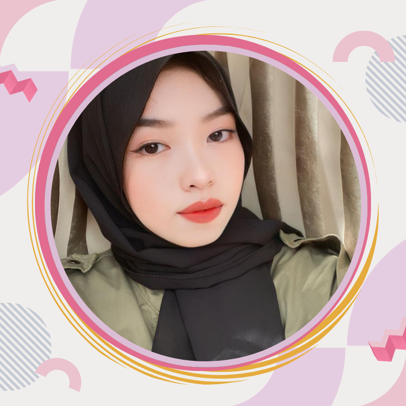

Home
HELLO WELCOME TO WEBSITE PORTOFOLIO
SITI MARIA ULFA
230209500033
PTIK A
UNIVERSITAS NEGERI MAKASSAR
News
Berita terkini tentang Free Fire mencakup beberapa acara besar, seperti Free Fire World Series (FFWS) SEA 2024 di mana tim Indonesia bersaing memperebutkan gelar juara. Selain itu, ada kolaborasi seru antara Garena Free Fire dan JKT48, serta kegiatan amal dengan Habib Ja'far. Garena juga merayakan ulang tahun ke-7 Free Fire dengan berbagai event seru, hadiah menarik, dan pembaruan karakter serta fitur dalam game.
Di tengah kesibukan sehari-hari saya, ada satu hal yang tak bisa dilewatkan, yaitu bermain game online! Bagi sebagian orang, game mungkin sekadar hiburan, tetapi bagi saya, bermain game online adalah cara sempurna untuk bersantai, mengasah strategi, dan tentu saja, bersosialisasi dengan teman-teman di seluruh dunia.
Game favorit saya termasuk Free Fire, yang tidak hanya seru tetapi juga menantang. Melalui game online, saya bisa berkompetisi dan belajar berkolaborasi dengan pemain lain, baik dari dalam maupun luar negeri. Selain itu, game online menjadi sarana untuk mengembangkan kemampuan berpikir cepat dan strategi yang kreatif.
Bermain game juga membantu saya mendapatkan waktu luang yang menyenangkan di sela-sela mengerjakan tugas, dan tentunya menjadi cara ampuh untuk melepas stres!
Stay tuned untuk tips dan trik seru seputar dunia game dari saya. Siapa tahu, kita bisa bertemu di dunia virtual!
About Me
Halo! Saya adalah seseorang yang memiliki tekad besar untuk menjadi orang sukses, dengan minat yang mendalam dalam teknologi, pendidikan, dan tentunya, game online. Di samping kesibukan saya mengejar mimpi dan terus belajar, saya suka mengeksplorasi dunia digital, baik melalui pengembangan website maupun bermain game.
Sebagai individu yang selalu bersemangat untuk berkembang, saya percaya bahwa teknologi adalah alat yang luar biasa untuk mencapai kesuksesan di era modern ini. Saya berusaha selalu mengikuti perkembangan terbaru, baik dalam hal teknologi maupun strategi bisnis, sehingga saya bisa terus melangkah maju menuju kesuksesan yang saya impikan.
Di waktu luang, saya sering terlibat dalam berbagai game online, yang bagi saya bukan hanya hiburan, tetapi juga sarana untuk belajar strategi, kerja sama, dan berpikir cepat. Selain itu, saya juga suka menantang diri sendiri dengan berbagai proyek coding, seperti pembuatan website ini!
Selamat datang di halaman pribadi saya, di mana saya berbagi berbagai hal yang saya minati, dari teknologi, pengembangan diri, hingga dunia gaming!
Form
Contact Us
sitimariaulfa0909@gmail.com
085962885598
Follow Us
InstagramTikTok
YouTube